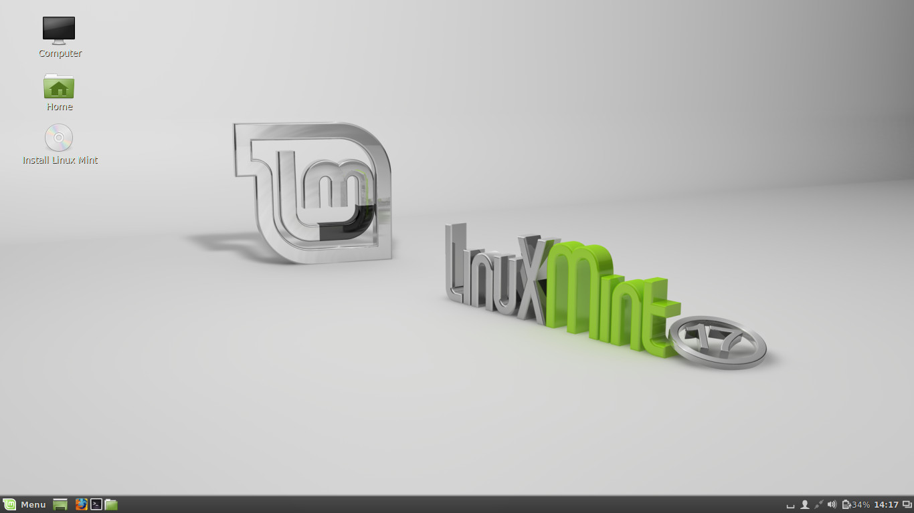

Linux Mint
Welcome to our Linux Mint page now Linux Mint is the 4rd most used OS in the
world behind Windows, OSX, and Ubuntu now Linux Mint is base off of Ubuntu but because it is so popular many application
website in there how to downloads part of there website they will have instructions on how to install for Linux Mint.
Now Linux Mint is a beginner linux distro it great for newcomers to Linux.
